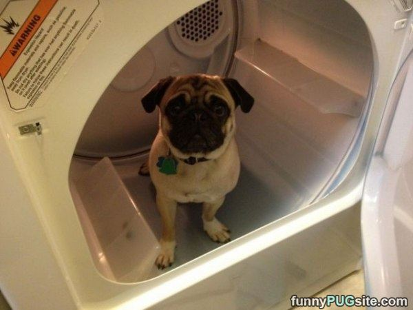

Pug Breed Standards

The fawn coloring is the most common coloring for the pug. It includes a light pelt with dark black accents around the face and dark eyes that stare into your soul and accept you for who you are.

Despite popular belief that pugs are supposed to be washer-dryer friendly they should exclusively be dry cleaned.